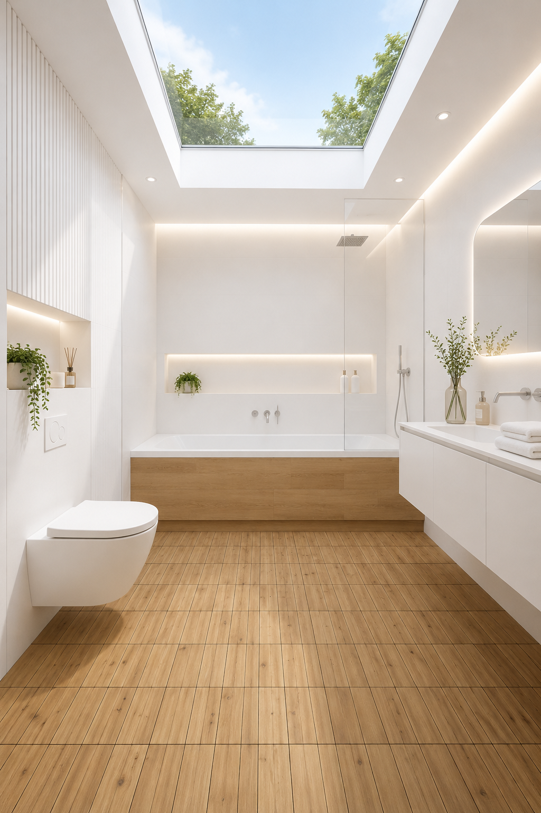

Wood and White
Bathroom · A warm, calm look
White bathrooms are endlessly appealing — clean, calm, easy to live with. But without something to warm them up, they can tip into feeling a little cold. Wood is the simplest answer. A panelled bath surround, floor tiles that feel like they came from a Scandinavian cabin, a few plants on a shelf — and the whole room shifts. This is a look built around that idea.
Oak Effect Bath Panel — Front & End
An 18mm LDF panel in a warm oak finish, with a side and end piece included — ideal for a corner bath. It's adjustable in height and can be cut to size, so it works with most standard straight baths. Comes with a 100mm plinth and a two-year guarantee.
View on Amazon →Interlocking WPC Wood-Effect Floor Tiles
These click together without tools, screws or adhesive — just snap them into place on any flat surface. Made from wood-plastic composite so they're fully water-resistant and won't warp, splinter or crack. The warm wood grain looks just right underfoot, and they work indoors or out.
View on Amazon →Wooden Bath Caddy
A bath tray that bridges across the bath for books, a candle, somewhere to rest a glass. Bamboo or solid wood versions both work beautifully with this look — and they're the kind of thing that makes a bathroom feel genuinely considered rather than just clean.
Find one we love →Fluffy White Bath Towels — Set of Four
100% ring-spun cotton at 600 GSM — the weight where a towel stops feeling like a towel and starts feeling like something you actually want to wrap yourself in. White works with everything, and this set of four means you're never caught short. Double-stitched so they hold their shape wash after wash.
View on Amazon →